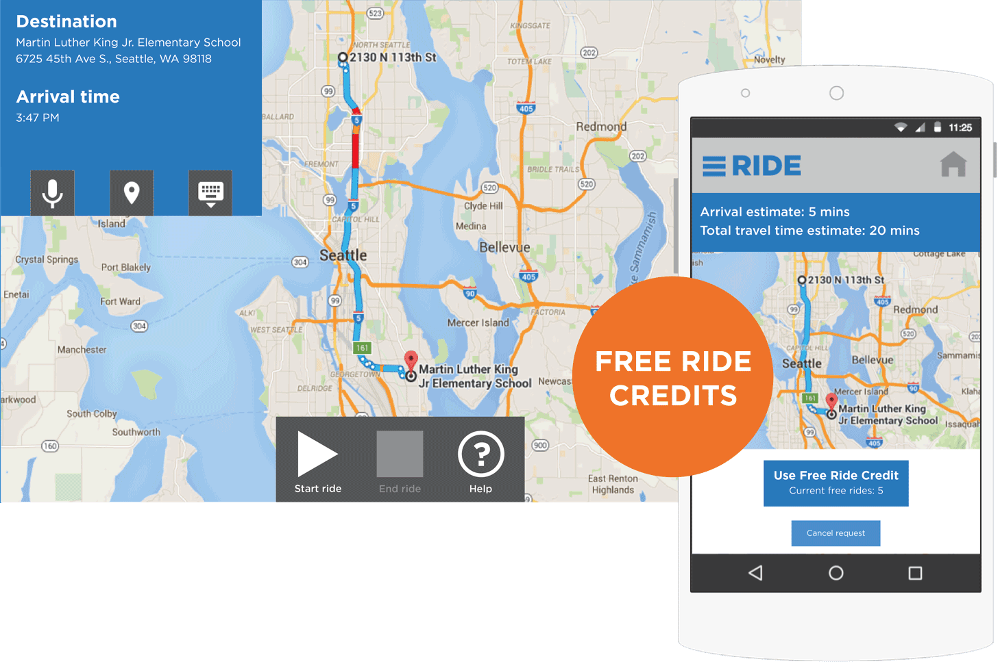
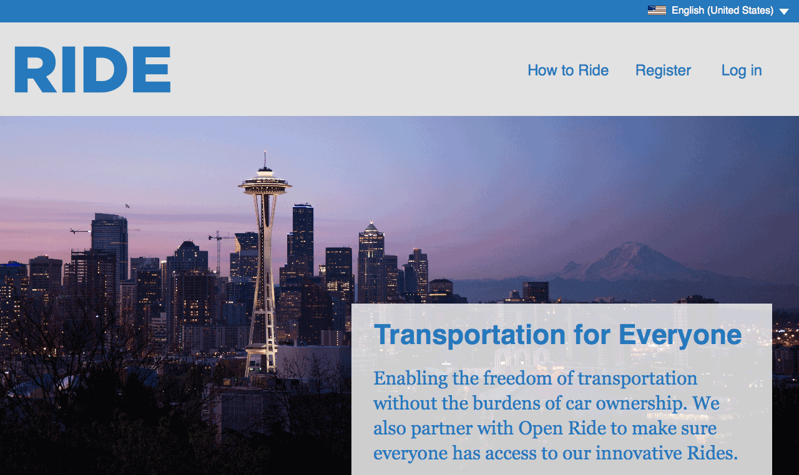
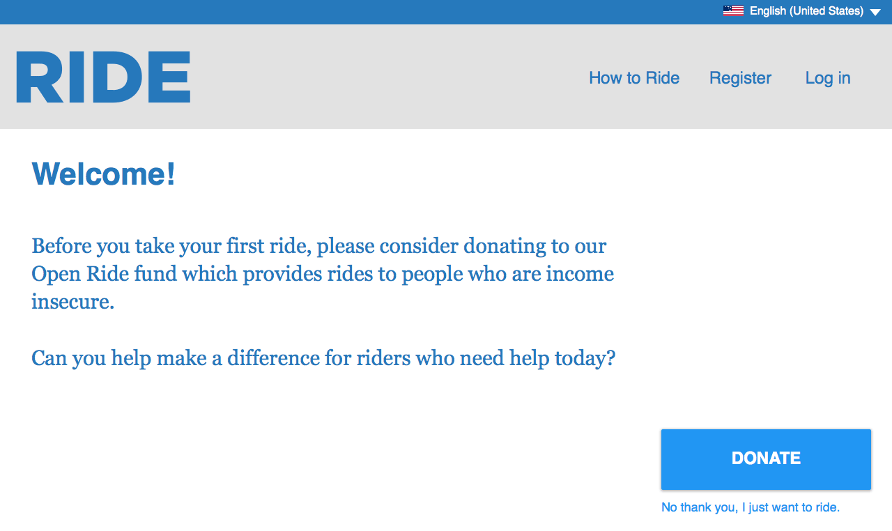
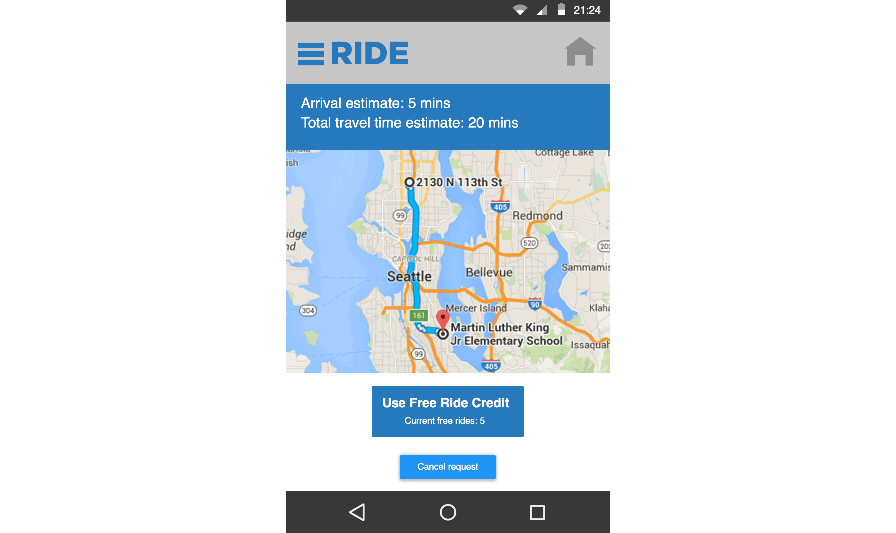
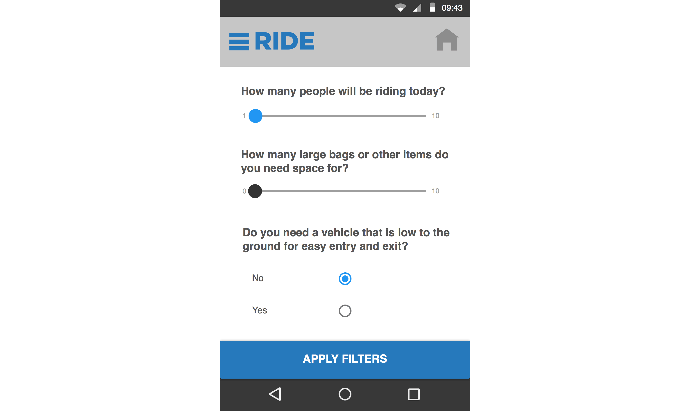
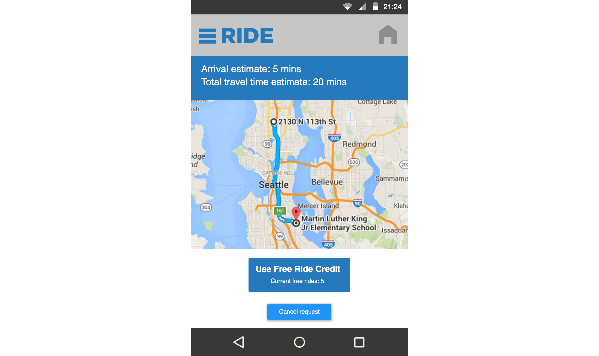
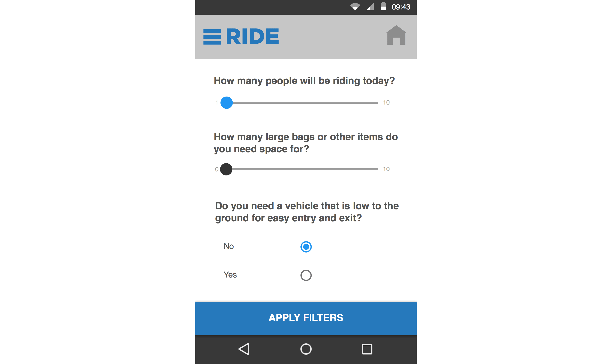
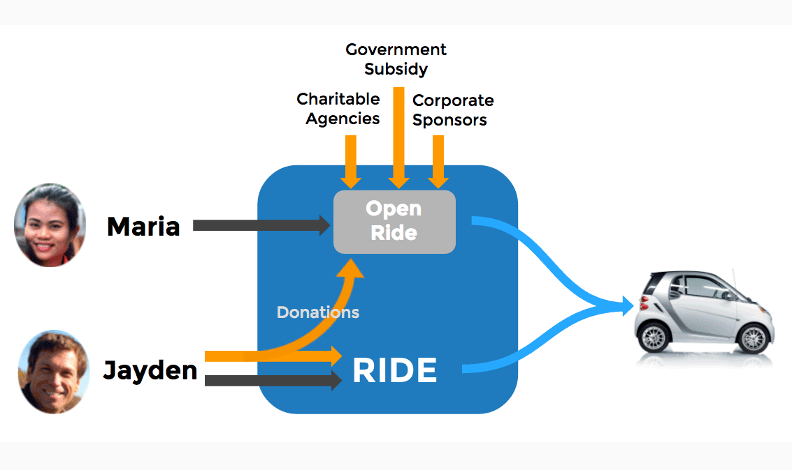
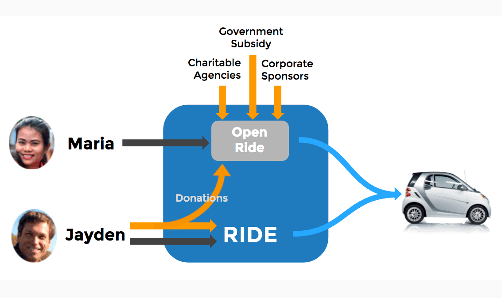

Autonomous Vehicle System
Project Summary
During my capstone project in the Master's program in Human Centered Design and Engineering at the University of Washington, I was sponsored by Intel to explore how autonomous vehicles (AVs) might exist in the near future (5 – 10 year range). I, along with my team decided to focus specifically on how AVs might be used to benefit society.
I created an entire system design including interactive prototypes for website, mobile, and in-AV experience for a system that provides paid rides, as well as free rides for people who are income insecure.
Problem Space
I identified a large gap in successful transportation services for people who are income insecure, especially for unplanned trips. Without reliable, affordable transportation, income insecure people are at risk for missing important appointments, job opportunities, or incurring unmanageable expenses to meet their needs.
How might we design an AV system to improve transportation for people who are income insecure, especially for unplanned trips?
Process
This was a large project, and I iterated through the design process numerous times. I began with an in-depth literature review, and a Tesla test drive to begin to understand the AV space. I then conducted numerous interviews with both people who identified as income insecure and with service providers.
Together with my team, we iterated on solution ideas through the use of sketching and low-cost prototyping supplies. Once our system design was in place I prototyped the interfaces for a website, mobile application, and in-car screen experience.
When our first round of prototypes were ready we began usability studies, and followed the Rapid Iterative Testing and Evaluation (RITE) method, and I made improvements to the prototype after every round of studies, resulting in a total of six major revisions.
  



 

Results
After my intensive work our vision became an autonomous vehicle system that supports and enables people who are income insecure, through the use of funds generated by people who are income secure.
Ride is an autonomous vehicle (AV), for-profit company that provides individual car rides to people who are income secure and to people who are income insecure. Ride's technology systems allow users to request AV's from any location. OpenRide is a subsidiary of Ride that collects donations from full-fare paying riders, charitable agencies, corporate sponsors, and the government to pay for free rides for qualifying income insecure riders.
Title
Ride System Design
Date
Early 2016
Links
- Website Prototype Video
- Website Prototype
- Mobile Prototype Video
- Mobile Prototype
- AV Prototype Video
- AV Prototype
- Process Book
- Project Poster
{kind=link}
Tasks
- User Research
- Interviews
- Ideation
- Prototyping
- Usability Studies
- Analysis